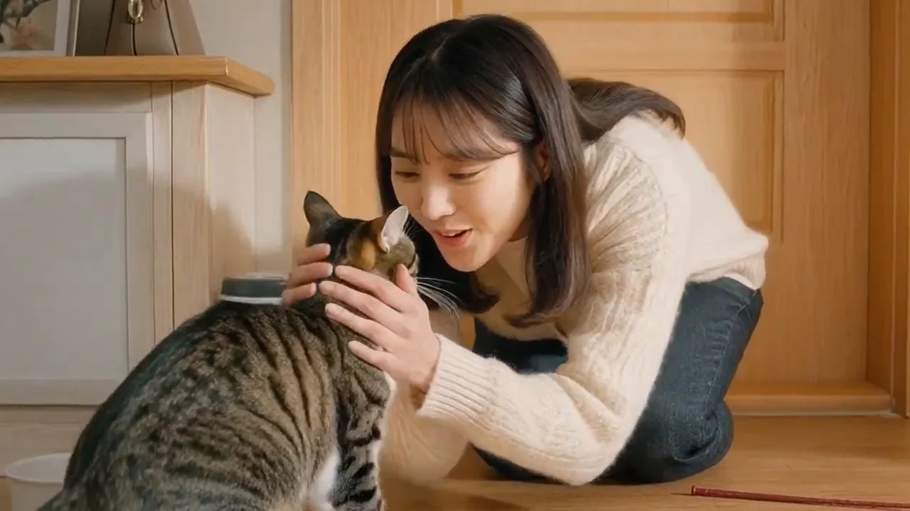
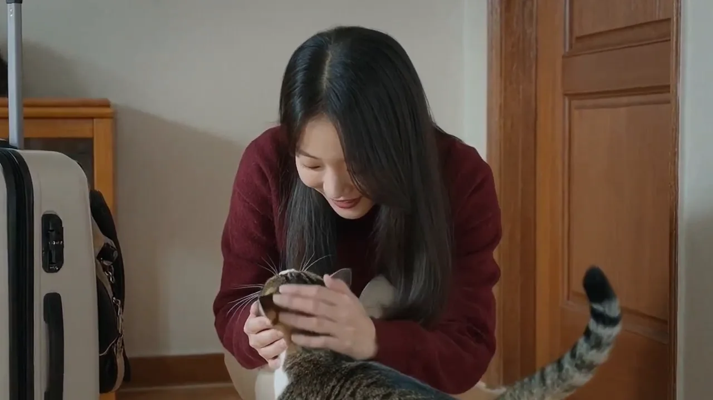

필요한 돌봄 말하기
자연스러운 한국어 문장으로 반려동물의 상황과 필요한 도움을 입력하세요.
요청 내용 확인반려동물의 성향과 돌봄 조건을 입력하면 알맞은 제공자를 비교할 수 있어요. 요청부터 매칭, 돌봄 기록까지 한 번에 체험해 보세요.

요청을 작성하고, 돌봄 제공자를 비교하고, 진행 상황을 기록할 수 있습니다.
자연스러운 한국어 문장으로 반려동물의 상황과 필요한 도움을 입력하세요.
요청 내용 확인돌봄 경험, 지역, 비용, 서비스 조건을 비교해 적합한 사람을 추천합니다.
추천 결과 비교돌봄 상태를 확인하고, 맞춤 체크리스트와 후기로 이용을 마무리하세요.
돌봄 기록과 후기돌봄 요청 작성부터 제공자 선택, 진행 기록, 후기까지 직접 이용해 보세요.
한국어로 상황을 적으면 주요 조건을 정리합니다. 분석 결과는 직접 수정할 수 있어요.
현재 기능은 규칙 기반 분석입니다. 생성형 AI 모델과 연결되어 있지 않습니다.
왼쪽에 돌봄 상황을 입력하고
‘요청 조건 정리하기’를 눌러주세요.
반려동물 돌봄은 단순한 시간 거래가 아닙니다. 누가 돌봐주는지, 우리 아이와 잘 맞는지, 돌봄은 어떻게 진행되는지까지 확인할 수 있어야 합니다.
